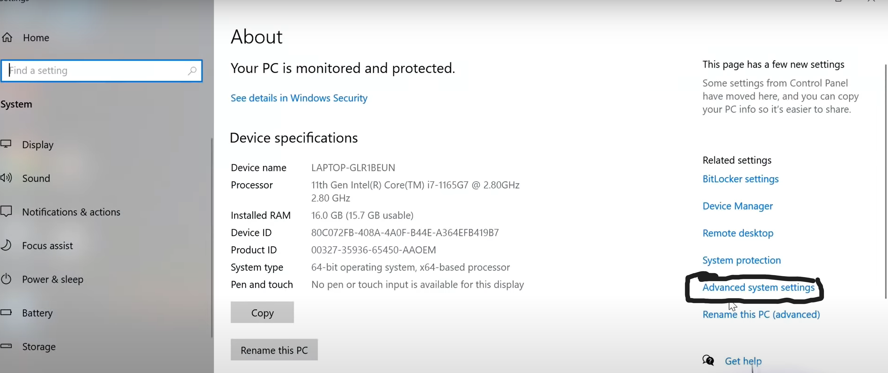
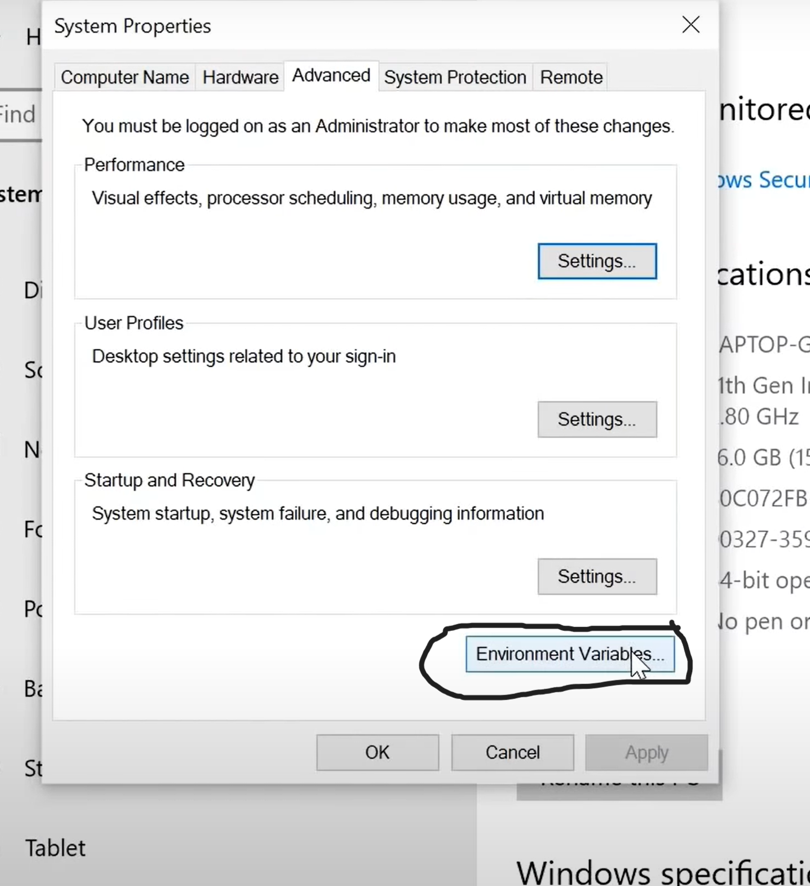
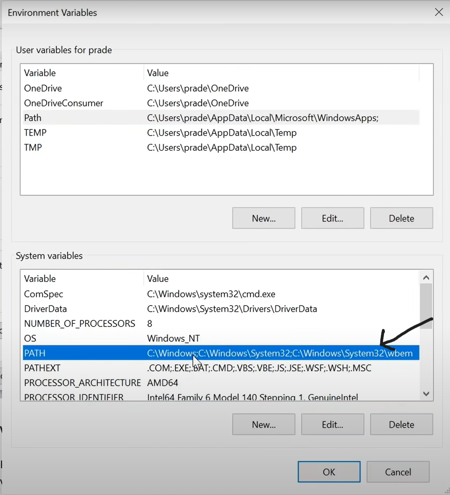
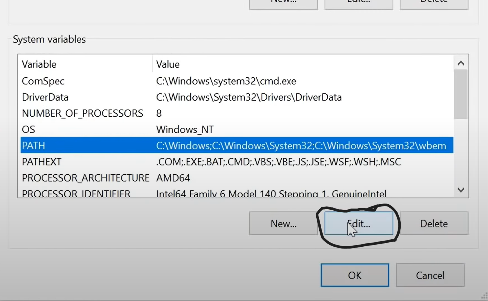
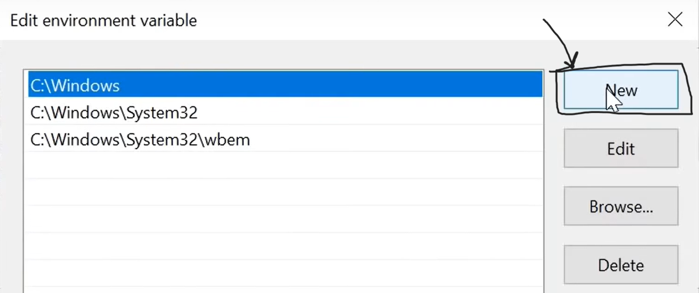

Now go to file explore in your system and then go to "This PC"
Right click on it and go to propertities
Then go to the Advanced system propertities

Go to environment variables 
Here, you have two options one is environment variables and path variables
If you select the system variables to add the path then all the window users in your system path will be added
If you select the environment variables only the respective user path will be added
My suggestion is to select the path option in the system variables

Now select the edit option which is below 
Select new option 
NOW ADD THE BELOW LINE TO THE PATH AND SELECT OK
"C:\MinGW\bin"
for verification purpose go to gitbash or command prompt an enter g++
If you got no input files as the message then addition of path is sucessfully completed